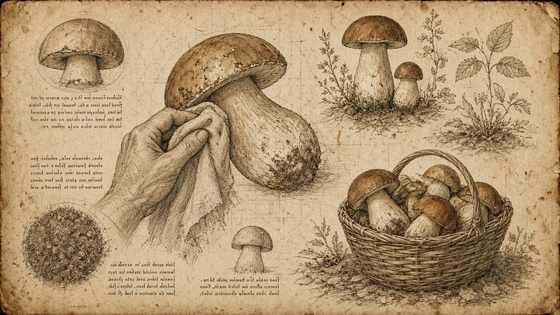
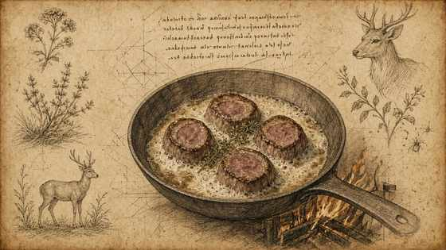
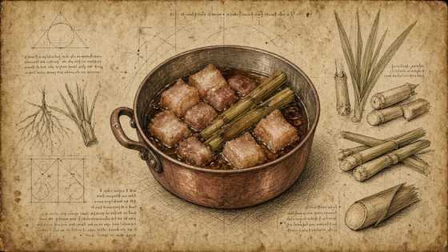
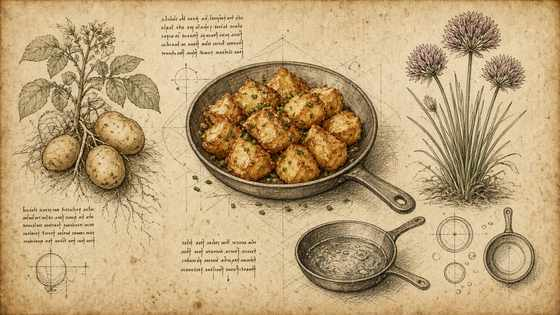
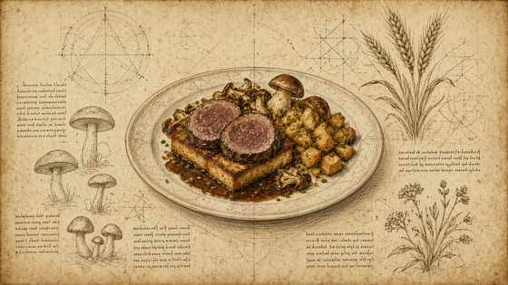

01
Pulire i funghi con panno umido (non lavarli).
Clean mushrooms with a damp cloth (do not wash).

MasterChef Magazine · Ricetta IV · Tutorial
MasterChef Magazine · Recipe IV · Tutorial
Filetto di cervo, lemongrass, funghi (non lavati), salsa paprika-limone-aglio, crostini di brioche. — struttura Fooby, tavole Leonardo; quantità solo se dette nel video.
Venison fillet, lemongrass, mushrooms (not washed), paprika–lemon–garlic sauce, brioche croûtons. — Fooby structure, Leonardo plates; quantities only if spoken on camera.
← Scheda del quaderno ← Notebook cardPulire i funghi con panno umido (non lavarli).
Clean mushrooms with a damp cloth (do not wash).

Rosolare medaglioni di cervo nel burro: croccanti fuori, morbidi dentro.
Brown venison medallions in butter: crisp outside, soft inside.

Guanciale lessato, poi burro e lemongrass; salsa paprika, limone, aglio, lemongrass, aceto.
Blanched guanciale, then butter and lemongrass; sauce of paprika, lemon, garlic, lemongrass, vinegar.

Patate fritte; erba cipollina.
Fried potatoes; chives.

Impiattare: crostini di brioche, medaglioni, porcini, patate ed erba cipollina.
Plate: brioche croûtons, medallions, porcini, potatoes and chives.
